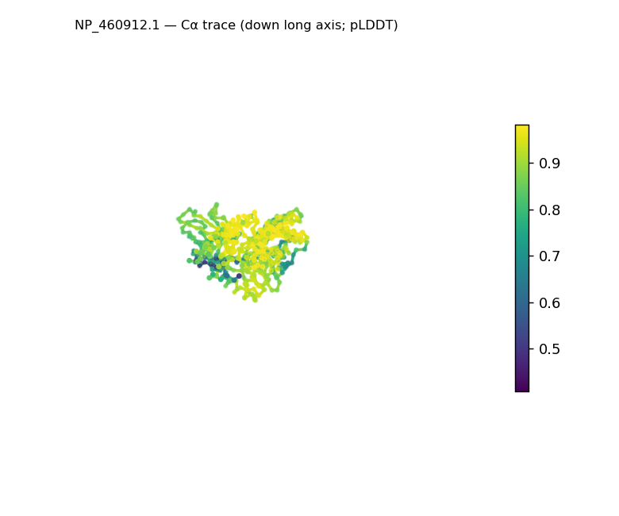
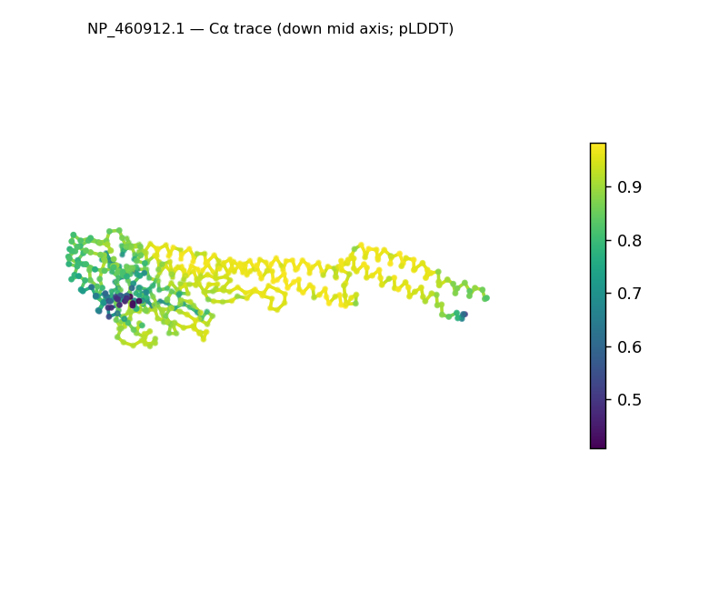
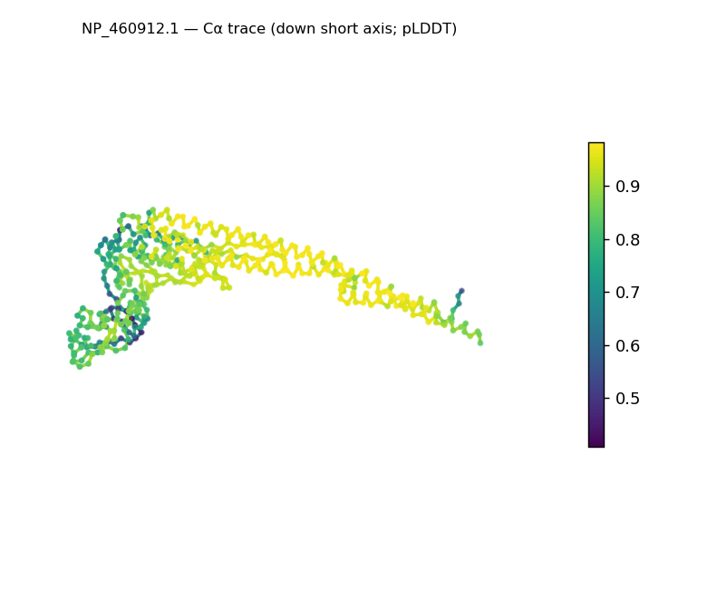
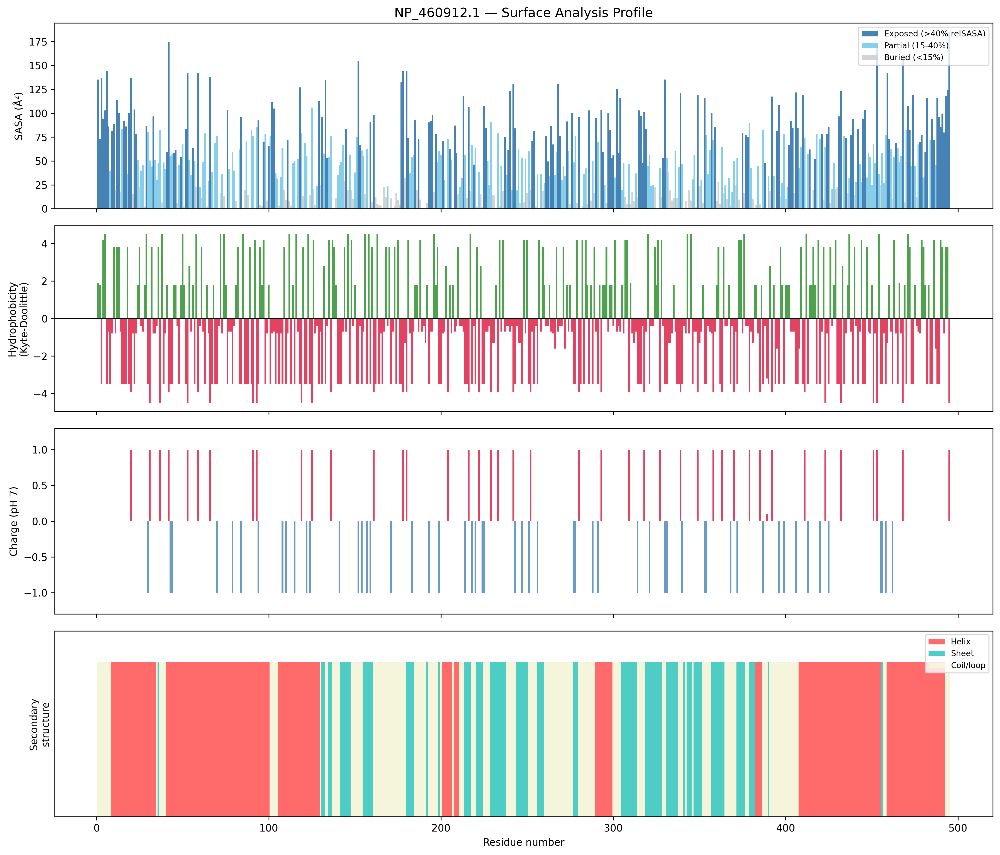
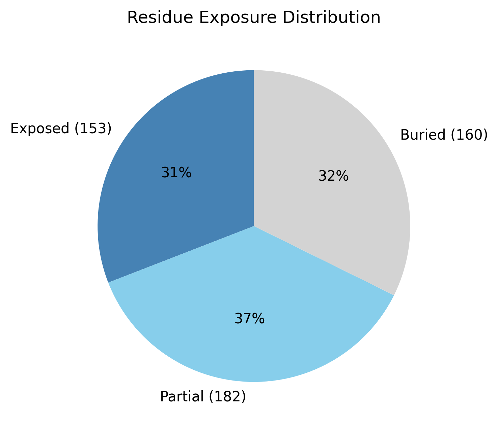

Structural analysis — NP_460912.1
Facts are emitted deterministically from the measurement scripts. Sections marked with a SYNTHESIS comment are authored by the Claude session (judgment, Zone 2), kept visibly separate from the measured facts.
Executive summary
A single-chain, 495-residue predicted model that is strikingly elongated: asphericity 0.63 and radius of gyration 41.5 Å (≈39% above the ~29.9 Å expected for 495 residues), with a 148.9 Å long axis (≈3.6:1 long:short). It is nonetheless well-structured — real DSSP secondary structure is 43.4% helix and 22.0% sheet (65% in defined elements) — so the elongation reflects an extended, multi-segment architecture, not disorder. Confidence is high (mean pLDDT 86.3, median 90.0). One internal inconsistency is worth flagging: the SS-based top fold candidate (α/β hydrolase, a compact globular fold) does not fit the measured elongation and should be treated with caution. The solvent-exposed surface is net-positive (+8 e; 20 positive vs 12 negative surface residues).
User-provided context
None provided. All observations below are derived from the structure alone.
Structure overview
- Source: predicted model — pLDDT in the B-factor column
- Chains: 1 (single chain)
- Residues / atoms: 495 / 3622
- Missing residues: 0
- Non-solvent ligands: none
- chain A: 495 res
Structural views



Cα backbone trace (Agent 2.2 matplotlib placeholder), down the long / mid / short principal axes; coloured by pLDDT. A worm trace, not a Mol* cartoon — true cartoons pending Agent 2.1 (#18).
Fold & shape
- Shape: prolate (elongated) (asphericity 0.63, Rg 41.52 Å)
- Approx. dimensions: 148.9 × 56.5 × 41.9 Å
- Secondary structure: helix 43.4%, sheet 22.0%, coil 34.5%
- Fold class: alpha/beta
- alpha/beta hydrolase (SCOP c.69, CATH 3.40.50; confidence high)
- TIM barrel (alpha/beta barrel) (SCOP c.1, CATH 3.20.20; confidence moderate)
- Rossmann fold (SCOP c.2, CATH 3.40.50; confidence low)
Surface properties
- Exposure: buried 32.3%, partial 36.8%, exposed 30.9%
- Total SASA: 25235.2 Ų
- Surface hydrophobicity (KD): mean -1.05 ± 2.59
- Surface charge (pH 7): net 8 e (20 +, 12 −)
- Hydrophobic patches: 1:
- residues 479–481 (len 3, mean KD 3.27)


Prediction quality / structural coherence
Confidence is reported, never gated — these signals are inputs for the synthesis below, not a pass/fail.
- pLDDT (chain A): mean 86.33, median 90.04, range 40.8–98.2, std 12
- Compactness: Rg 41.52 Å vs ~29.9 Å expected for 495 residues (2.5·N^0.4) — larger than expected
- Core present: buried fraction 32.3%
- Coil fraction: 34.5%
- Top fold-candidate confidence: high
Coherence assessment
The confidence signals indicate a genuinely folded, well-determined model (mean pLDDT 86.3, median 90.0, std 12) with a buried core (32.3%) and 65% of residues in defined SS — not molten or disordered despite the large radius of gyration. The elevated Rg (41.5 Å vs ~29.9 expected) is explained by genuine elongation (asphericity 0.63, 148.9 Å long axis), not by lack of structure. Fold-level coherence is only partial, though: the SS content earns an α/β class call, but the specific α/β-hydrolase top candidate describes a compact globular domain that is inconsistent with the elongation measured here — shape and named fold disagree, so the candidate is unreliable. The α/β SCOP class (from SS content) is the defensible call.
Expected-parameter comparison
No expected-parameter profile supplied — this is the default for novel / low-homology targets. See the independent observations below.
Independent observations
- Strongly elongated, yet folded. Asphericity 0.63, Rg 41.5 Å (≈39% over the ~29.9 Å globular expectation), 148.9 × 56.5 × 41.9 Å — but 65% of residues sit in defined SS (43.4% helix, 22.0% sheet), so this is an extended fold, not an unfolded chain.
- Internal inconsistency: shape vs. fold candidate. The classifier's top candidate (α/β hydrolase — a compact globular fold) contradicts the measured elongation. Together the two signals flag that the SS-ratio fold name does not capture this architecture; only the α/β SCOP class is defensible.
- High, fairly uniform confidence (pLDDT median 90.0, std 12, min 40.8) — the elongation is a confident structural feature, not a low-confidence artifact.
- Net-positive surface (+8 e; 20 positive vs 12 negative) with essentially one short hydrophobic patch (residues 479–481) — most hydrophobicity is buried.
What cannot be determined from structure alone
- Identity and function — not established; the analysis is identity-agnostic.
- Fold / architecture — the elongated shape is inconsistent with the compact α/β-hydrolase candidate; resolving the true architecture (e.g. extended multi-domain or coiled-coil-containing) needs structural comparison — Agent 3 (Foldseek).
- Mechanism / active site — none assessed; no ligands; the fold name implies no function.
- Homology / relatives — Agent 3. Seeds: a confidently-folded but strongly elongated ~495-residue chain (148.9 Å long, asphericity 0.63), 43% helix, net-positive surface (+8 e); the elongation + helical content is the structural signature to match.
Methods
- Measurements (deterministic):
parse_structure.py (metadata, confidence stats), surface_analysis.py (Shrake–Rupley SASA, Kyte–Doolittle hydrophobicity, charge at pH 7, DSSP secondary structure, shape metrics, SCOP/CATH fold class), render_views.py (Mol* cartoon renders).
- Report facts below the synthesis sections are emitted verbatim from the above scripts' JSON by
assemble_report.py — no transcription.
- Synthesis sections (executive summary, independent observations, coherence assessment, cannot-determine) are authored by Claude per
SKILL.md Step 9, each claim cited to a measurement.